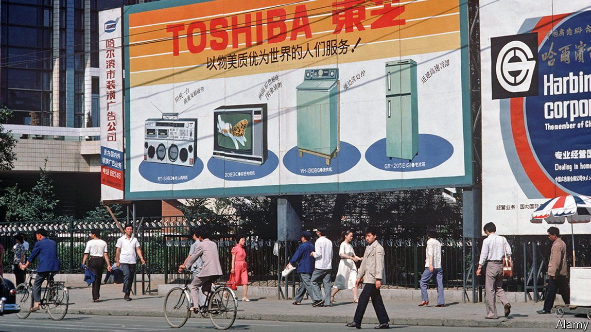

2021-09-27T06:16:53+00:00
亚洲的供应链
日本公司试图减少对中国制造的依赖
但只是一点点

本月底，日本电子巨头东芝在大连开设了30年的一家工厂将停产。它曾经是全球供应链扩展到中国的一个典型例子，如今它的关闭又示范了这些供应链正在如何被重新配置。答案一言以蔽之就是：小心翼翼，稍稍调整。
东芝位于大连的这家工厂经历了亚洲商业模式的沧桑巨变。当初它开设时，日本是亚洲贸易和制造网络中无可争议的枢纽。到2019年，日本与亚洲大型经济体之间的半成品贸易为3900亿美元，与韩国和台湾地区争夺亚军位置。中国以9350亿美元的贸易额遥遥领先。
本世纪以来，中国工人的小时工资按名义价值计算已经上升了10倍，达到6.2美元。这仍然只是日本工人工资的四分之一，但却是泰国工人工资的两倍，后者在2008年时还与中国工人持平。不仅如此，紧张的地缘政治局势让日益强硬的中国共产党和世界上富裕的民主国家之间的关系不断恶化。
这些趋势有助于解释为什么自2012年以来，中国在日本新增对外直接投资中的份额稳步下降。几乎在十年前，日本公司在中国的制造分支数量就已经停止增长，而在亚洲其他地方——特别是印度、印度尼西亚、泰国和越南——新的分部继续涌现。东芝将对日本国内和越南的50家工厂的其中一些进行扩产，来弥补一部分在中国放弃的产能，越南是东芝的30处海外生产基地之一。它正在利用日本政府一年前推出的补贴计划，该计划鼓励制造回流和供应链多元化（未言明的目标是减少对中国的依赖）。
许多其他日本公司也发现自己处于类似的境地。本月，规模更小些的日本电子产品制造商冲电气工业株式会社（OKI Electric Industry）宣布，它在深圳设立已20年的工厂将停止生产打印机。这些产能将转移到泰国和日本的现有工厂。不过，大多数公司并没有急于完全退出中国。去年，日本的政府机构日本贸易振兴机构（Japan External Trade Organisation）的一项调查发现，8%的日本公司表示计划减少或完全放弃在中国的业务，低于对在其他国家业务有此打算的平均比例。从美国玩具制造商孩之宝到韩国科技巨头三星，许多跨国公司都在做类似的筹划。至于东芝，它将保留在大连的第二家工厂，这是一家合资企业。
即使是爱国热情最高涨的企业高管也不会毫不犹豫地与世界第二大经济体断绝往来。这会破坏与中国的供应商和制造技术之间有利可图的关系。这样的关系需要多年时间才能缔造。但就眼前这一步而言，企业发现自己面临削减成本和保证未来供应稳定的紧迫任务，中国看起来不再是最佳选择。
2021-09-27T06:16:53+00:00
Asian supply chains
Japanese companies try to reduce their reliance on Chinese manufacturing
But only a bit
AT THE END of the month the production line of a Toshiba factory in Dalian will come to a halt, 30 years after the Japanese electronics giant opened it in the north-eastern Chinese city. Once a totemic example of global supply chains expanding into China, the closure exemplifies how these are being reconfigured. The short answer is: delicately and at the margin.
Toshiba’s plant in Dalian has spanned a sea change in Asian business patterns. When it opened, Japan was the undisputed linchpin of the region’s trade and manufacturing networks. By 2019 Japan’s $390bn in intermediate-goods trade with big Asian economies was vying for runner-up status with South Korea and Taiwan. China, with $935bn-worth, was way ahead.
Hourly wages commanded by Chinese workers have risen tenfold in nominal terms this century, to $6.20. That is still a quarter of Japanese rates but twice the pay of Thai workers, who were at parity with Chinese ones as recently as 2008. If that were not enough, geopolitical tensions are souring relations between the increasingly heavy-handed Chinese Communist Party and the world’s rich democracies.
These trends help explain why China’s share of Japan’s new outbound foreign direct investment has steadily declined since 2012. The number of manufacturing affiliates that Japanese companies have in China stopped growing almost a decade ago, while new affiliates elsewhere in Asia—notably India, Indonesia, Thailand and Vietnam—have continued to mushroom. Toshiba will offset some of the forgone capacity with expansion in some of its 50 factories back home and also in Vietnam, one of its 30 overseas facilities. It is tapping the Japanese government’s year-old subsidy scheme to encourage reshoring and diversification of supply chains (and whose unspoken aim is to reduce reliance on China).
Many other Japanese firms find themselves in a similar situation. This month OKI Electric Industry, a smaller Japanese electronics-maker, announced that its factory in Shenzhen, set up 20 years ago, would stop making printers. That capacity would move to existing factories in Thailand and Japan. Still, most are not rushing to exit China altogether. A survey last year for the Japan External Trade Organisation, a government body, found that 8% of Japanese companies said they were planning to reduce or eliminate their Chinese presence, less than the average for Japanese firms in other countries. Many global companies, from Hasbro (an American toymaker) to Samsung (a South Korean technology giant) are making a similar calculation. Toshiba itself will maintain a second, part-owned factory in Dalian.
Even the most tub-thumpingly patriotic executive would hesitate to sever ties with the world’s second-biggest economy. This would disrupt profitable relationships with Chinese suppliers and manufacturing know-how. Such things take years to forge. But at the margin, where companies find themselves pressed by the imperatives to cut costs and guarantee stable future supplies, China no longer looks like the place to be. ■
2021-09-27T06:16:53+00:00
亞洲的供應鏈
日本公司試圖減少對中國製造的依賴
但只是一點點
本月底，日本電子巨頭東芝在大連開設了30年的一家工廠將停產。它曾經是全球供應鏈擴展到中國的一個典型例子，如今它的關閉又示範了這些供應鏈正在如何被重新配置。答案一言以蔽之就是：小心翼翼，稍稍調整。
東芝位於大連的這家工廠經歷了亞洲商業模式的滄桑巨變。當初它開設時，日本是亞洲貿易和製造網絡中無可爭議的樞紐。到2019年，日本與亞洲大型經濟體之間的半成品貿易為3900億美元，與韓國和台灣地區爭奪亞軍位置。中國以9350億美元的貿易額遙遙領先。
本世紀以來，中國工人的小時工資按名義價值計算已經上升了10倍，達到6.2美元。這仍然只是日本工人工資的四分之一，但卻是泰國工人工資的兩倍，後者在2008年時還與中國工人持平。不僅如此，緊張的地緣政治局勢讓日益強硬的中國共產黨和世界上富裕的民主國家之間的關係不斷惡化。
這些趨勢有助於解釋為什麼自2012年以來，中國在日本新增對外直接投資中的份額穩步下降。幾乎在十年前，日本公司在中國的製造分支數量就已經停止增長，而在亞洲其他地方——特別是印度、印度尼西亞、泰國和越南——新的分部繼續湧現。東芝將對日本國內和越南的50家工廠的其中一些進行擴產，來彌補一部分在中國放棄的產能，越南是東芝的30處海外生產基地之一。它正在利用日本政府一年前推出的補貼計劃，該計劃鼓勵製造迴流和供應鏈多元化（未言明的目標是減少對中國的依賴）。
許多其他日本公司也發現自己處於類似的境地。本月，規模更小些的日本電子產品製造商沖電氣工業株式會社（OKI Electric Industry）宣布，它在深圳設立已20年的工廠將停止生產打印機。這些產能將轉移到泰國和日本的現有工廠。不過，大多數公司並沒有急於完全退出中國。去年，日本的政府機構日本貿易振興機構（Japan External Trade Organisation）的一項調查發現，8%的日本公司表示計劃減少或完全放棄在中國的業務，低於對在其他國家業務有此打算的平均比例。從美國玩具製造商孩之寶到韓國科技巨頭三星，許多跨國公司都在做類似的籌劃。至於東芝，它將保留在大連的第二家工廠，這是一家合資企業。
即使是愛國熱情最高漲的企業高管也不會毫不猶豫地與世界第二大經濟體斷絕往來。這會破壞與中國的供應商和製造技術之間有利可圖的關係。這樣的關係需要多年時間才能締造。但就眼前這一步而言，企業發現自己面臨削減成本和保證未來供應穩定的緊迫任務，中國看起來不再是最佳選擇。